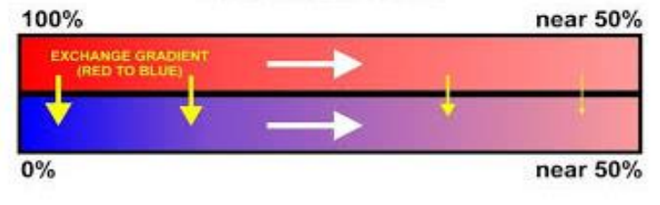
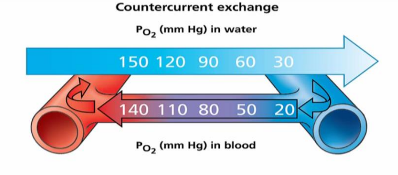
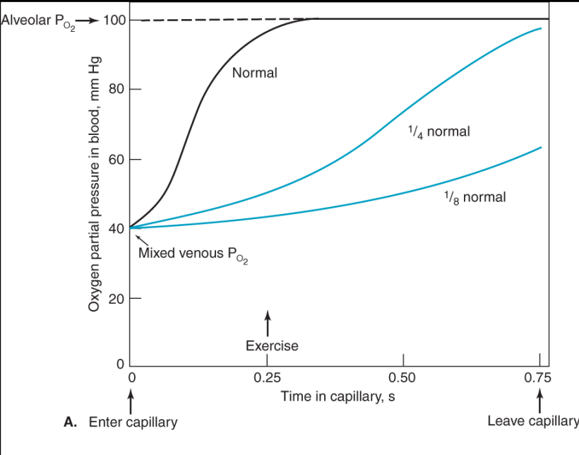

Independent Project
Underwater Breathing System
A gill-inspired system for pulling dissolved oxygen straight out of water.
Concept · Mathematical Design
2016 – 2019
Conventional scuba gear solves underwater breathing with large, heavy oxygen tanks that cap both dive time and depth. This project asks a different question: what if, instead of carrying oxygen down with you, you extracted it directly from the water the way a fish does?

Counterflow diffusion concept, modeled on fish gill structure
Why fish gills
Oxygen dissolves in water because of its partial pressure in the atmosphere above it, which means there's usable oxygen in the water around a diver, if you have a way to pull it out. Fish already solve exactly this problem: water flows over their gills and through a structure called the primary lamellae, subdivided into secondary lamellae, where the actual gas exchange happens. Blood in the gill and water flowing over it move in opposite directions, counterflow, which keeps a partial pressure gradient between them along the entire length of the exchange surface. Oxygen diffuses from the oxygen-rich water into the deoxygenated blood, and carbon dioxide diffuses the other way, out of the blood and into the water.
If blood and water moved the same direction instead of opposite, gas exchange would stop as soon as their concentrations equalized. Counterflow is what keeps the gradient, and the diffusion, going the whole way through.
This project takes that same counterflow-diffusion principle and asks what a human-scale version would need to look like: a system that mimics artificial fish gills closely enough to extract dissolved oxygen from surrounding water and deliver it directly to deoxygenated blood, skipping the gas phase (and the tank) entirely.
The math behind it
The exchange is governed by Fick's Law: the rate of diffusion of a gas through a membrane depends on the partial pressure gradient across it and the surface area available for exchange.
Fick's Law
R = D·A·(δP/δx), where D is the diffusion coefficient, A is the surface area of gas exchange, δP is the partial pressure gradient, and x is the distance along the direction of diffusion.

Partial pressure gradient driving oxygen into blood, carbon dioxide out
Sizing the exchange tubes comes down to the same tradeoff in every diffusion system: longer tubes mean more exchange surface, but only up to the point where the blood saturates, after which the extra length just adds drag with no added oxygen. In human lungs, the oxygen-saturation curve along that gradient is sigmoidal; fitting the same curve to this system is what would set the actual tube length for the device, rather than picking one arbitrarily.

Saturation-driven tube length: where the curve here levels off
Where it stands
This project stopped at the concept and mathematical-formulation stage. The core diffusion model, the Fick's-law-based sizing approach, and the design rationale for tube length are worked out, but the airflow analysis needed to turn this into an actual device was never finished, and nothing was ever built or tested. I'm leaving that honestly unresolved rather than dressing it up as further along than it is: the open work is the fluid-dynamics side of the design, followed by a bench-scale proof of concept for the exchange membrane itself.